"L'émerveillement est le commencement de la sagesse"
Intérêts
Musique
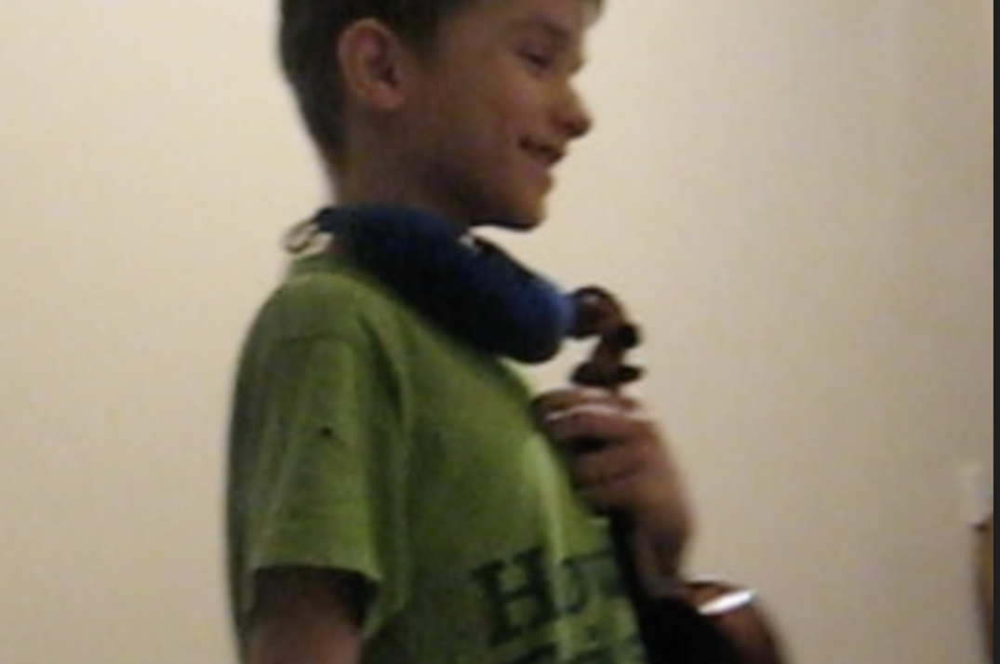
J’ai étudié le violon et le piano pendant 7 ans à l’école de musique. Aujourd'hui, je viens de me lancer dans la guitare et dans la composition.
Roller
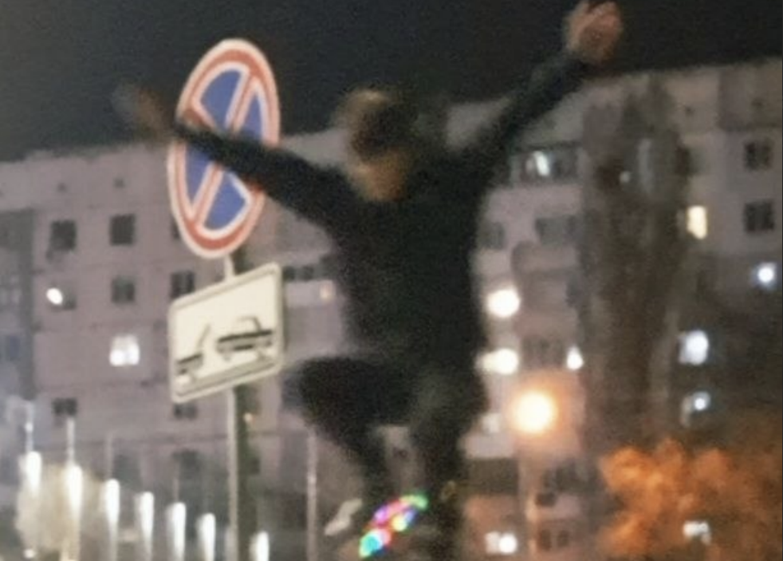
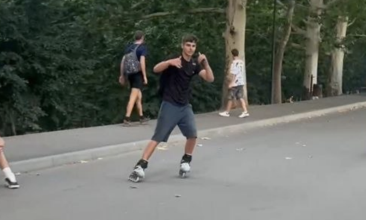
8 mois de pratique, des Figures en progression et une ville explorée sans limites. Pour moi, le roller est le mélange parfait entre sport, adrénaline et liberté de mouvement.
Ski
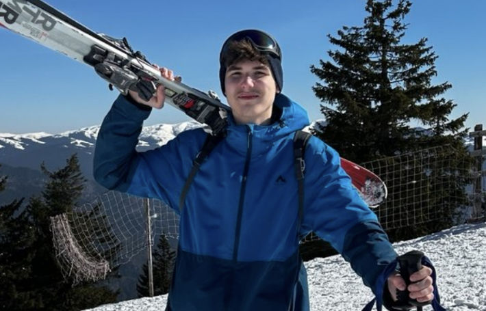
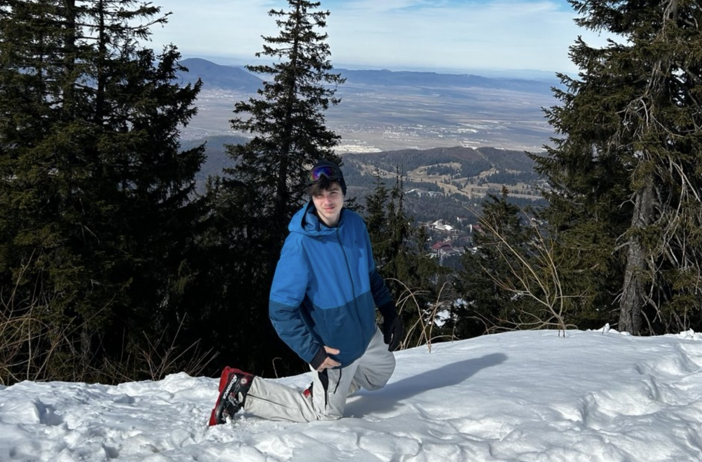
Le ski est une activité que je pratique en hiver.
Programmation
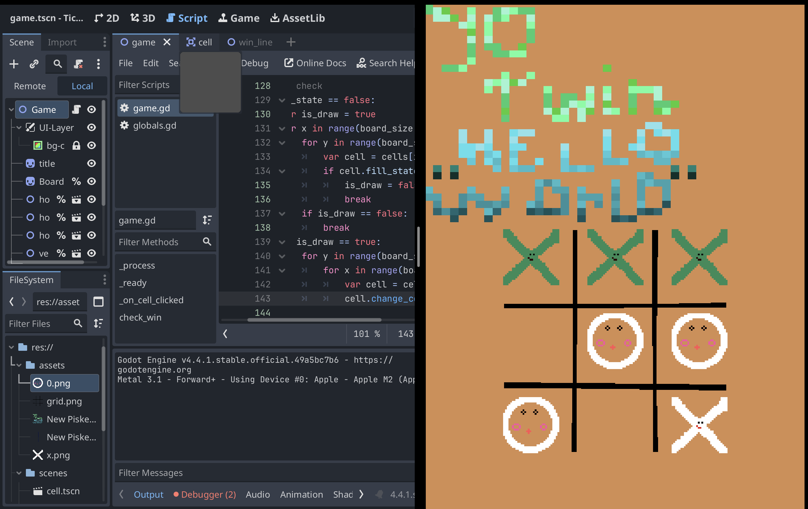
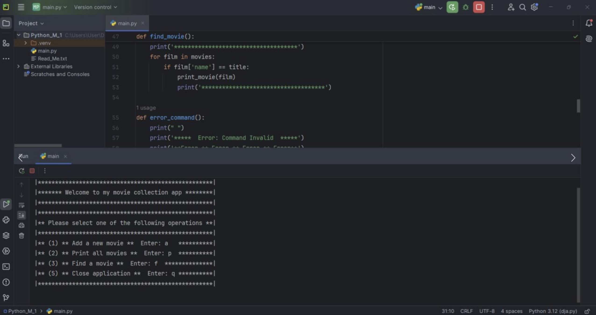
Je développe des projets numériques et j'apprends de nouvelles technologies.
3D modelisation et CGI en Blender
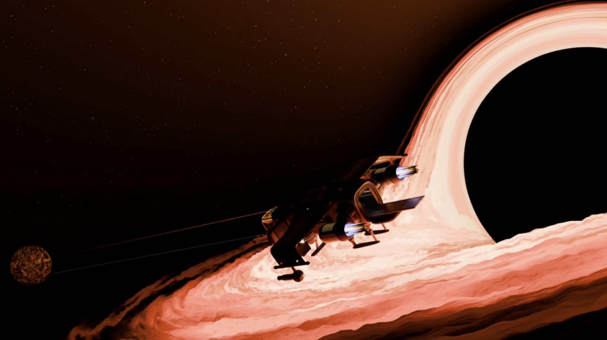
Je modelise en 3D et je fais des animations.
Ingénierie de Loisir
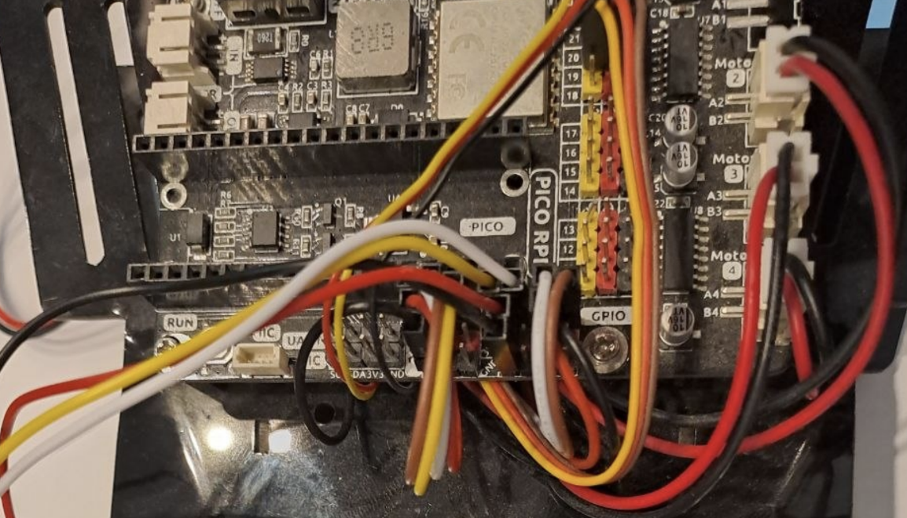
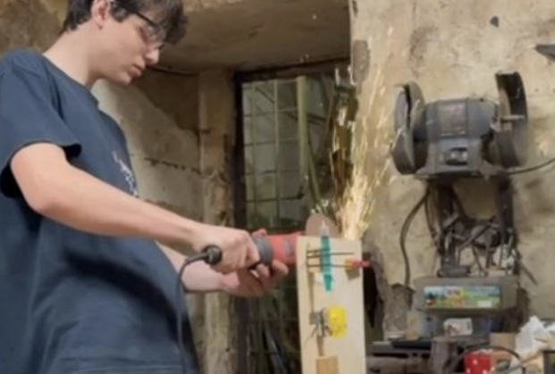
Exploration Spatiale
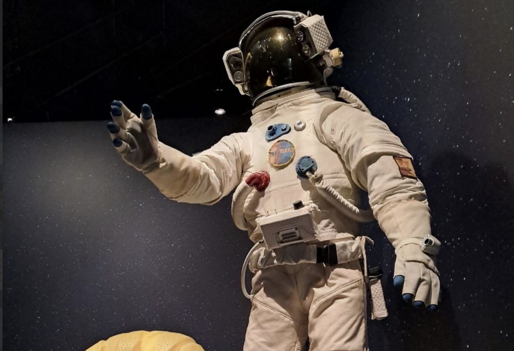
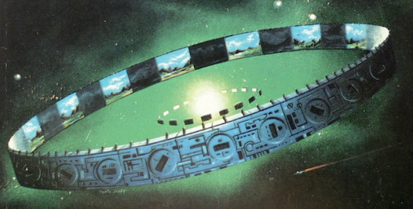
J aime explorer des fenomenes et objets qui sont dehors notre atmosphere